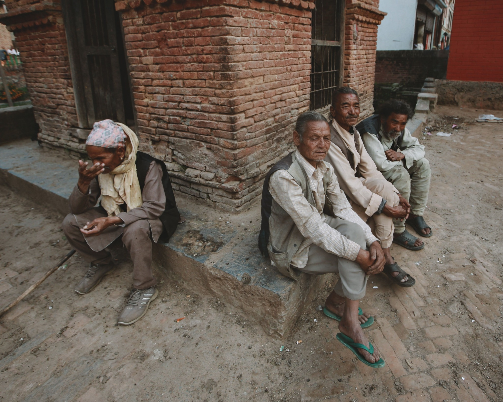
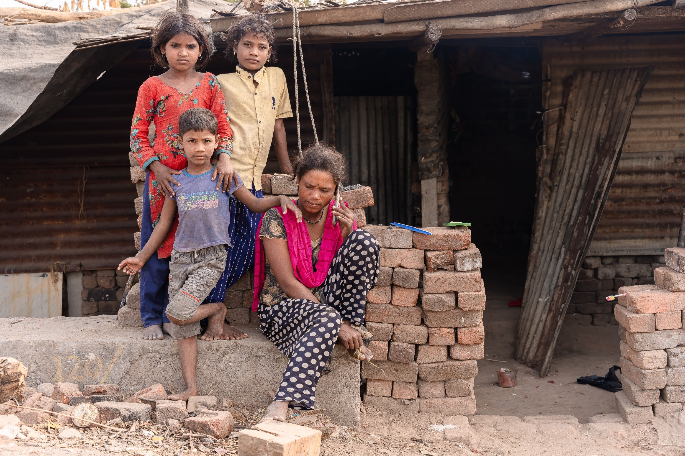
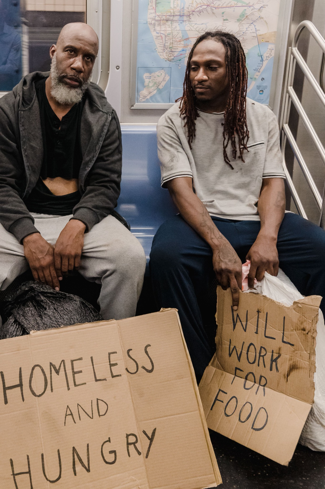

Humanitarian issues & social protection
These photographs provide visual context for discussions of vulnerability, social exclusion and dignity; they are not presented as reporting by Naveen.




Original field photographs and interview-based material will be added following appropriate ethical approval, informed consent and safeguarding review. These images are included for visual context and are not represented as original field reporting.
The question
Humanitarian stories can draw attention to urgent needs, but they must not reduce people to suffering. Ethical coverage provides context, protects dignity, avoids unnecessary exposure and recognises that people affected by crises have knowledge, choices and agency.
What reporting could explore
- How people affected by a crisis describe their priorities in their own words.
- What barriers prevent safe access to services and assistance.
- How humanitarian actors coordinate while maintaining independence and impartiality.
- What public evidence supports claims about needs, response and gaps.
Interview notebook
Questions for a future interview
What would you want outsiders to understand about your situation? What support is useful, and what is missing? What should journalists do to report this story safely and respectfully?
Use trauma-informed interviewing. Do not disclose locations, identities or operational details that could put people or aid workers at risk. Do not imply affiliation or endorsement without permission.